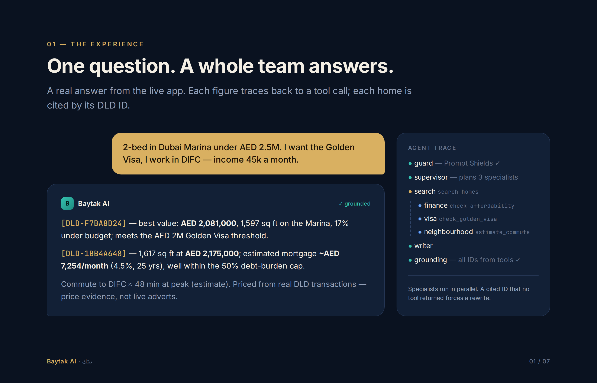
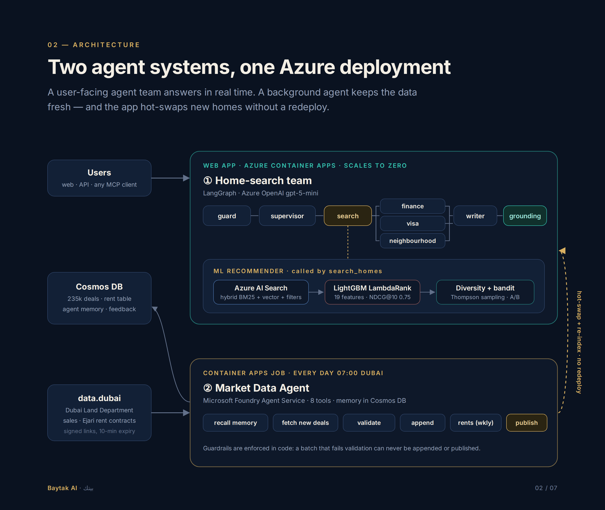
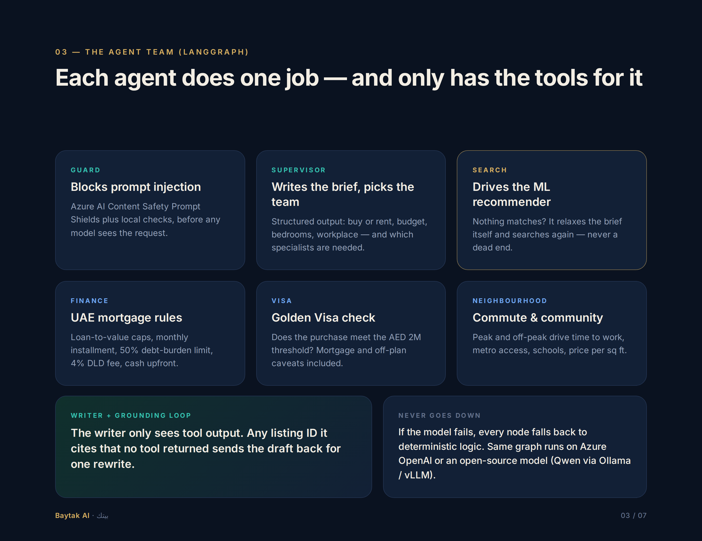
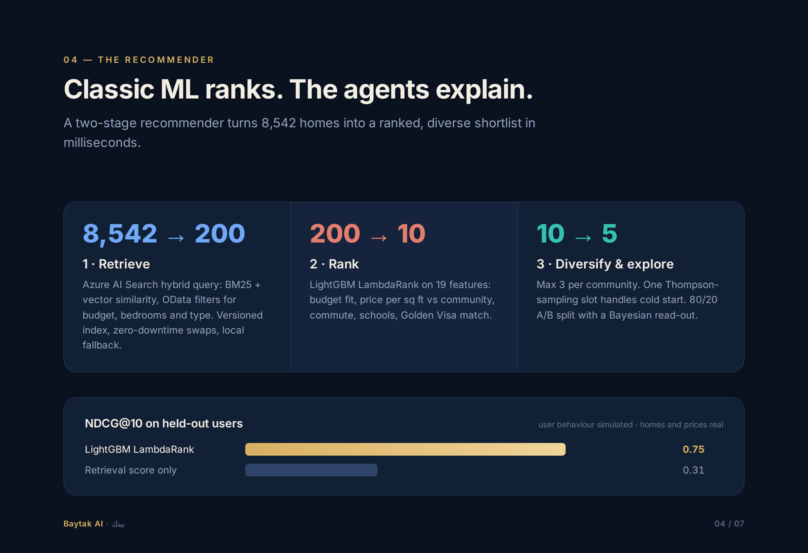
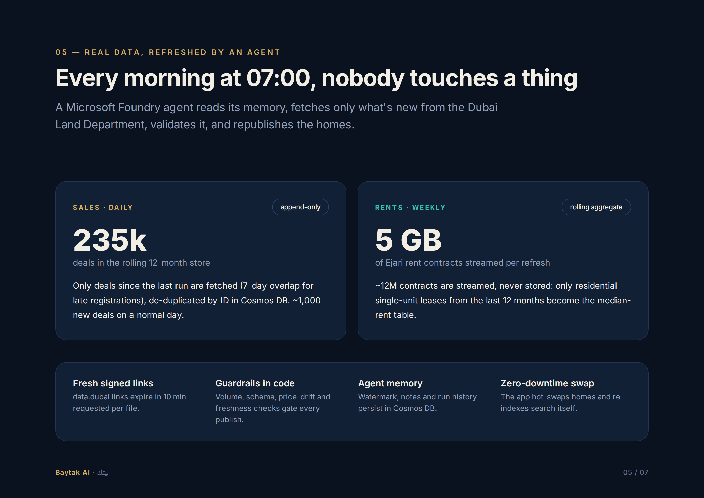
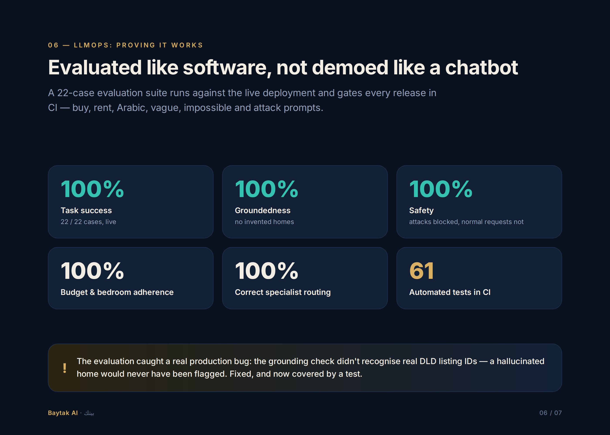
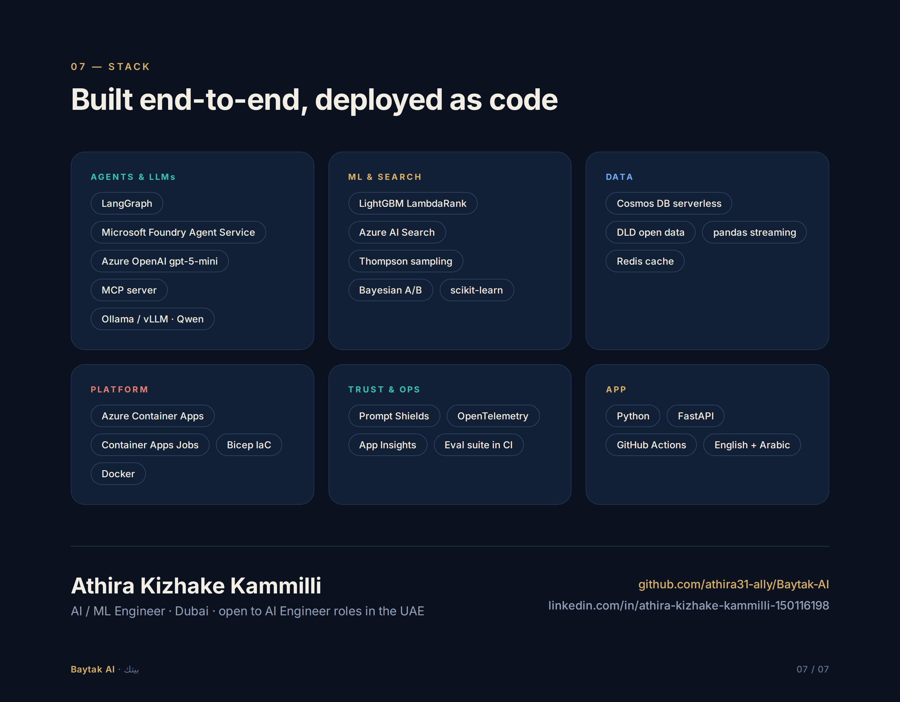

A multi-agent property advisor for Dubai — grounded in real Dubai Land Department data that an autonomous agent refreshes every morning.
Ask in English or Arabic. A supervisor routes the request, specialist agents check UAE mortgage rules, the Golden Visa and commutes in parallel, an ML ranker orders the homes — and every number in the answer comes from a tool, never from the model.
A real answer from the live app. Every price and mortgage figure comes from a tool call, and every home is cited by its Dubai Land Department ID.

A user-facing LangGraph team answers in real time. A Microsoft Foundry agent keeps the data fresh — and the app hot-swaps new homes and re-indexes search without a redeploy.





